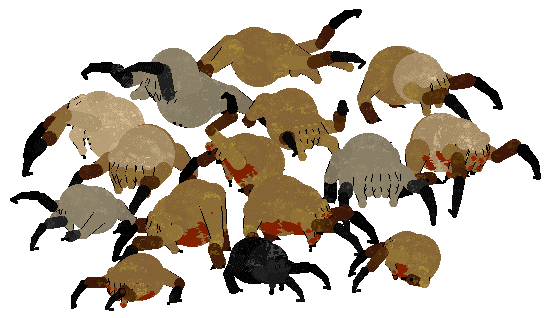
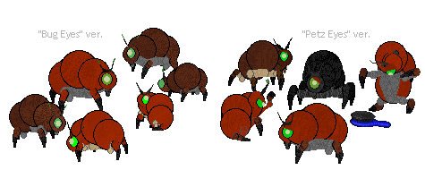
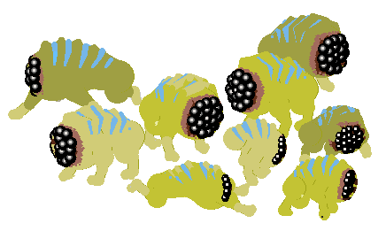
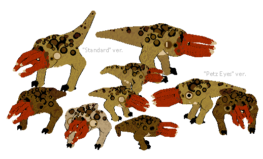

Xenozoology
The creatures in this directory are organisms not native to Earth that have nevertheless carved out an ecological niche here. Rather than destroy these organisms for their invasive nature, we seek to understand the extent to which they may become an integrated part of Earth's rapidly changing biosphere.
The danger these creatures pose can vary, and may be mitigated by appropriate measures. Extraterrestrial lifeforms face difficulties on Earth due to being displaced from their natural environment. They may be unable to find food or appropriate shelter, and may be faced with novel threats, all of which can put them into a state of stress. Stressed creatures may display atypical behavior, such as unpredictability and aggression. This is a critical distinction to make for any aspiring xenobiologist. An animal whose needs are taken care of can display very different behavior than one in a state of confusion or starvation.
[Catz]
Headcrab
Headcrabs are parasitic creatures that are able to latch onto and control a host's nervous system. While this poses extreme danger, headcrabs can be made harmless by removing their skull-piercing "beak". Headcrabs who have been "debeaked" might attempt to couple with any available skull, albiet fruitlessly. Debeaked headcrabs also show a preference for "skull-like" foods, such as watermelon. Further documentation on Headcrab biology is available here.
Efforts are being made in the domestication of headcrabs. This has produced unique mutations not found in wild populations. Fuzzcrabs are one such domestic variety.
Vocalization data included.
[Available in Petz 5 and Unibreed versions. Non-OW.]
[File updated 6.13.20X1]
Snark
Also called a "Squeak Grenade", these creatures will emerge from their nests to antagonize nearby threats and, after a time, detonate themselves in a small but potent explosion of acid. Scientists are currently researching the evolutionary benefits of self-detonation. Proper handling will prevent accidental detonation, however, nipping of fingers remains a concern. Further documentation on Snark biology is available here.
Vocalization data included.
[Available in Petz 5 and Unibreed versions. Non-OW.]
[File updated 8.28.20X0]
[Dogz]
Houndeye
The houndeye is a social pack animal and predator. Acting in small groups of 3-5, these creatures can use a specialized organ to generate dangerous shock waves. Despite this, houndeyes are generally docile and curious creatures when not overtly stressed. When dealing with stressed or aggressive animals, extreme caution should be taken as the sonic blast they are capable of producing can rupture human eardrums and cause severe bodily harm, especially in the presence of multiple animals. Further documentation on Houndeye biology is available here.
Vocalization data included.
[Available in Petz 5 and Unibreed versions. Non-OW.]
[File updated 6.12.20X1]
Bullsquid
The bullsquid is an apex predator originating, like many Earth-bound extraterrestrial species, from the border world Xen. Bullsquid are solitary carnivores, and mainly feed on carrion, as well as small creatures such as headcrabs. However, hungry or territorial bullsquid will readily attack creatures larger than themselves. Bullsquid are able to produce a caustic acid that can be spat with great accuracy at long distances. Extreme caution should be taken when dealing with these creatures. Further documentation on Bullsquid biology is available here.